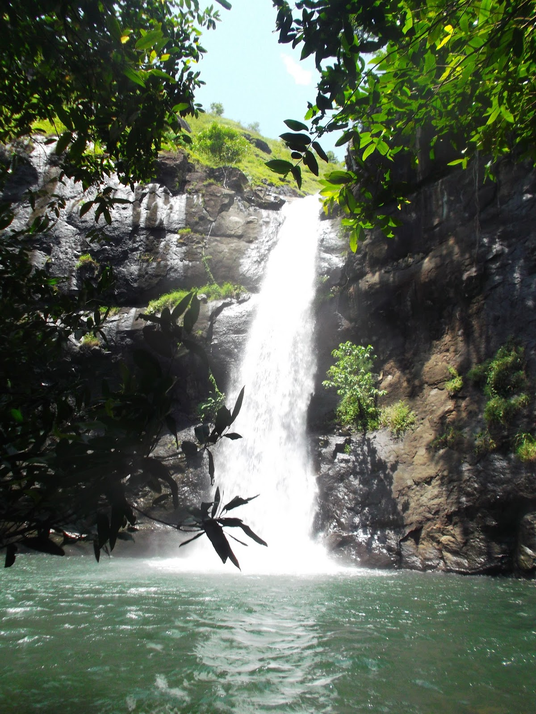

geological
jalur geowisata 4 ciletuh palabuhanratu
Geopark Ciletuh
Bagian selatan geopark ciletuh memiliki bentang alam yang sangat unik dan langka, yaitu berupa bentuk daratan tinggi dengan lembah berbentuk tapal kuda yang terbuka ke arah laut sehingga membentuk seperti panggung alam
Amfiteater ini terbentuk karena adanya proses geologi berupa sesar normal yang diikuti oleh sebuah longsoran yang besar karena gaya vertikal lebih besar dari gaya horizontal. Lembah amfiteater dipenuhi oleh keindahan hamparan sawah.
Keindahan amfiteater dan Teluk Ciletuh dapat dilihat dari daerah Panenjoan di Desa Tamanjaya, Pamoyanan di Desa Ciemas, Puncak Tugu di Desa Mekarjaya, Puncak darma dan Cikalapa di Desa Girimukti.
cikalapa
puncak darma

puncak tugu

panenjoan
 cikalapa
puncak darma
puncak tugu
panenjoan
cikalapa
puncak darma
puncak tugu
panenjoan


View Point Pamoyanan, Mekarjaya
Pemandangan indah ini dapat dilihat dari Pamoyanan, Desa Mekarjaya. Yang dimana dapat ditempuh dengan mobil 4 Wheel Drive (4WD) ataupun sepeda motor dengan waktu tempuh 30 menit dan melalui jalan berbatu dari jalan utama Desa Tamanjaya

View Point Puncak Darma From Girimukti
Pemandangan Teluk Ciletuh ini dapat dilihat dari Puncak Darma dan Cikalapa Desa Girimukti. Akses dapat ditempuh dengan mobil atau sepeda motor selama 15 menit dari Pantai Palangpan di Desa Ciwaru dengan kondisi jalan mendaki, juga dapat ditempuh dari jalan utama Desa Girimukti.
View Point Batu Cakup, Giri Mukti-Ciemas
Dari ketinggian Batu Cakup, terlihat jelas pemandangan laut dan perbukitan. Apabila sore menjelang malam bisa menikmati sunset juga suasana lautan bertaburan cahaya dari perahu nelayan. Ditempat ini tak sulit menemukan makanan dan minuman karena memiliki banyak warung.

View Point Puncak Darma From Girimukti
Pemandangan Teluk Ciletuh ini dapat dilihat dari Puncak Darma dan Cikalapa Desa Girimukti. Akses dapat ditempuh dengan mobil atau sepeda motor selama 15 menit dari Pantai Palangpan di Desa Ciwaru dengan kondisi jalan mendaki, juga dapat ditempuh dari jalan utama Desa Girimukti.

Pantai Cikeueus
curug larangan
pantai cisaar
pantai cikeus
goa meong
karang daeu

Pantai Cikalapa
Pantai Cikalapa atau sering disebut juga sebagai Pantai Karang Daeu, terletak di Desa Girimukti. Akses menuju pantai ini menggunakan sepeda motor dari Puncakdarma, kira-kira 30 menit dengan pemandangan indah hamparan hijau padi huma di sepanjang perjalanan.
Batu Catur, Girimukti
Batu yang mirip dengan bidak catur ini terdapat di Desa Girimukti. Batuan ini terbentuk dari andesit lava yang telah mengalami erosi dan pelapukan sehingga membentuk seperti bidak catur. Arkeolog menyebut batu mirip bidak catur yang ditemukan warga merupakan artefak. Usia batu tersebut diperkirakan peninggalan budaya Hindu atau Buddha pasca-abad 5 Masehi.
keanekaragaman budaya
Syukuran Nelayan, Ciwaru
Pesta nelayan Pelabuhan Ratu adalah pesta syukuran hajatan laut masyarakat nelayan Pelabuhan Ratu, Sukabumi, Tatar Pasundan. Pesta nelayan ini dilaksanakan dengan prosesi budaya bahari masyarakat Sunda pesisir dan turut dimeriahkan dengan serbaneka kesenian lokal seperti disimbolkan dalam tari-tarian yang mengiringi sepasang raja dan ratu yang diarak di atas pedati sebagai simbol penguasa Ratu Pantai Selatan. Pesta syukuran atas keberlimpahan hasil laut yang berada pada titik koordinat 6° 58' 53" S, 106° 32' 17" E ini dipungkas dengan acara puncak yaitu pelepasan ribuan tukik, anak penyu, ke lautan bebas.
Gula Kelapa
Curug Mawur
Resource penjelasan curug mawur masih kurang/tidak ada